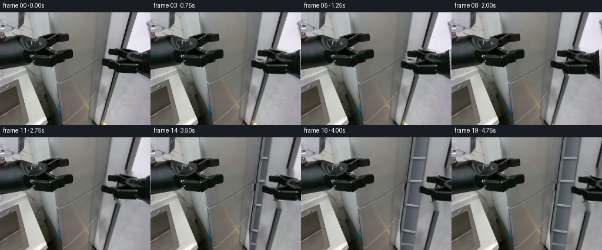
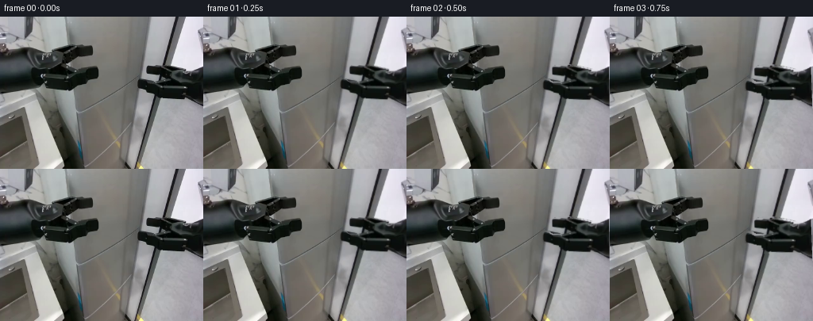
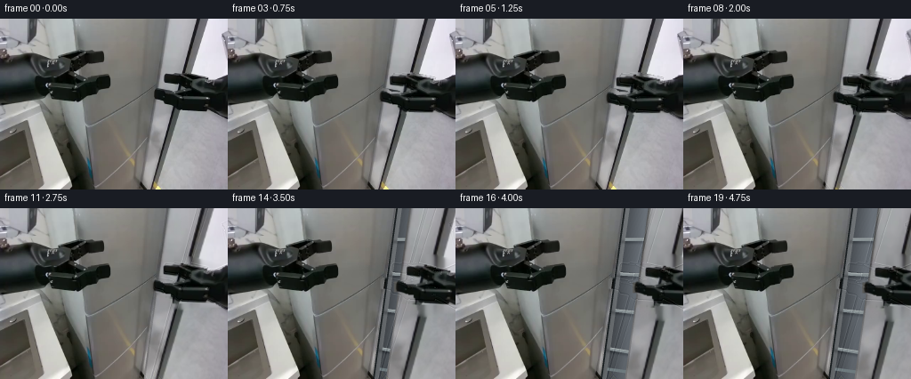
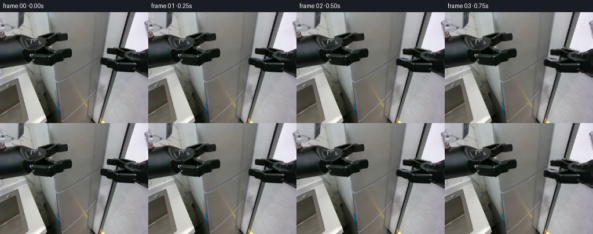

CODING AGENTS AS PIXEL WORLD MODELS
traex/GPT-6.1-Sol · common50_0009
点击播放 · 原生 RGB 像素
逐轮保存的候选
回放视频、检查图与代码变化。
每份候选均可单独播放。实际图片检查记录在下方工具轨迹中。
候选 01播放与检查图
点击播放 · 原生 RGB 像素


展开代码变化
--- 上一保存版本
+++ 本次保存版本
@@ -0,0 +1,211 @@
+from pathlib import Path
+import math
+import numpy as np
+from PIL import Image, ImageDraw, ImageFilter
+import artifact_io
+
+ROOT = Path(__file__).resolve().parent
+W, H = 256, 192
+FIRST = np.array(Image.open(ROOT/'first_frame.png').convert('RGB'))
+
+
+def polygon_mask(points, scale=1):
+ img=Image.new('L',(W*scale,H*scale),0)
+ ImageDraw.Draw(img).polygon([(int(x*scale),int(y*scale)) for x,y in points],fill=255)
+ return np.asarray(img,dtype=float)/255
+
+# Source silhouette measured from the input RGB raster. The entire tool remains
+# a rigid texture-bearing link, including its two parallel jaws.
+ARM_POLY=[(185,62),(191,60),(207,60),(217,62),(230,65),(241,68),
+ (248,68),(255,63),(266,61),(272,118),(255,115),
+ (250,110),(243,105),(237,104),(220,104),(209,104),
+ (199,105),(195,104),(195,100),(193,97),(193,94),
+ (187,93),(182,92),(176,91),(171,90),(171,79),
+ (174,78),(178,78),(183,81),(190,82),(195,81),
+ (199,78),(200,75),(199,74),(193,74),(187,72),(185,71)]
+ARM_MASK=polygon_mask(ARM_POLY)
+# Fill the occluded metal using vertical surface samples. This never introduces
+# an external texture; the stainless-steel colour and grain come from frame 0.
+def clean_door():
+ out=FIRST.astype(float).copy()
+ mask=np.array(Image.fromarray((ARM_MASK*255).astype('uint8')).filter(ImageFilter.MaxFilter(5)))>0
+ # Use unobstructed metal immediately above/below the physical arm.
+ for x in range(169,W):
+ ys=np.flatnonzero(mask[:,x])
+ if not len(ys): continue
+ lo=int(ys.min()); hi=int(ys.max())
+ a=max(0,lo-4); b=min(H-1,hi+5)
+ top=np.median(FIRST[max(0,a-4):a+1,x].astype(float),axis=0)
+ bottom=np.median(FIRST[b:min(H,b+5),x].astype(float),axis=0)
+ for y in ys:
+ t=(y-a)/max(1,b-a)
+ out[y,x]=top*(1-t)+bottom*t
+ # Relax just the repaired region, keeping all visible source pixels intact.
+ fixed=out.copy()
+ for _ in range(140):
+ av=(np.roll(out,1,0)+np.roll(out,-1,0)+np.roll(out,1,1)+np.roll(out,-1,1))/4
+ out[mask]=.90*av[mask]+.10*fixed[mask]
+ return np.clip(out,0,255)
+
+DOOR_TEXTURE=clean_door()
+# Projective camera and two door edges, with one immutable hinge axis.
+FOCAL=250.0
+PRINCIPAL=np.array([128.0,70.0])
+FREE_TOP=np.array([(189-128)/FOCAL,(-15-70)/FOCAL,1.0])
+FREE_BOTTOM=np.array([(159-128)/FOCAL,(204-70)/FOCAL,1.0])
+WIDTH_VECTOR=np.array([.56,-.012,-.21])
+HINGE_TOP=FREE_TOP+WIDTH_VECTOR
+HINGE_BOTTOM=FREE_BOTTOM+WIDTH_VECTOR
+VERTICAL=FREE_BOTTOM-FREE_TOP
+AXIS=VERTICAL/np.linalg.norm(VERTICAL)
+
+def project(p):
+ p=np.array(p); return p[...,:2]/p[...,2,None]*FOCAL+PRINCIPAL
+
+def rotate_vec(v,theta):
+ return v*np.cos(theta)+np.cross(AXIS,v)*np.sin(theta)+AXIS*np.dot(AXIS,v)*(1-np.cos(theta))
+
+def door_corners(theta):
+ d=rotate_vec(-WIDTH_VECTOR,theta)
+ return project([HINGE_TOP+d,HINGE_TOP,HINGE_BOTTOM,HINGE_BOTTOM+d])
+
+CLOSED_CORNERS=door_corners(0)
+
+# Homography obtained solely from the four projections of a single rigid plane.
+def homography(src,dst):
+ A=[]; b=[]
+ for (x,y),(u,v) in zip(src,dst):
+ A.append([x,y,1,0,0,0,-u*x,-u*y]); b.append(u)
+ A.append([0,0,0,x,y,1,-v*x,-v*y]); b.append(v)
+ h=np.linalg.solve(np.array(A),np.array(b))
+ return np.r_[h,1].reshape(3,3)
+
+S=3
+YY,XX=np.mgrid[:H*S,:W*S]
+X=(XX+.5)/S-.5; Y=(YY+.5)/S-.5
+
+def sample(array,x,y):
+ x=np.clip(x,0,W-1); y=np.clip(y,0,H-1)
+ ix=x.astype(int); iy=y.astype(int); jx=np.minimum(ix+1,W-1); jy=np.minimum(iy+1,H-1)
+ tx=x-ix; ty=y-iy
+ if array.ndim==3:tx=tx[...,None];ty=ty[...,None]
+ return (array[iy,ix]*(1-tx)+array[iy,jx]*tx)*(1-ty)+(array[jy,ix]*(1-tx)+array[jy,jx]*tx)*ty
+
+BASE_HI=sample(FIRST.astype(float),X,Y)
+
+# Coordinates on the original panel. The stationary refrigerator liner and
+# shelves are drawn analytically and only become visible through the opening.
+PANEL_H=homography(CLOSED_CORNERS,np.array([[0,0],[1,0],[1,1],[0,1]],float))
+PU=(PANEL_H[0,0]*X+PANEL_H[0,1]*Y+PANEL_H[0,2])
+PV=(PANEL_H[1,0]*X+PANEL_H[1,1]*Y+PANEL_H[1,2])
+PD=(PANEL_H[2,0]*X+PANEL_H[2,1]*Y+PANEL_H[2,2])
+U,V=PU/PD,PV/PD
+PANEL=(U>=0)&(U<=1)&(V>=0)&(V<=1)
+
+
+def make_interior(theta):
+ # Matte cool grey inner liner, dark gasket, and subtle shelf shadows.
+ depth=np.clip(U/.17,0,1)
+ illum=np.clip((abs(theta)/np.deg2rad(40)),0,1)
+ brightness=45+47*depth+15*illum+7*np.cos(V*2.7)
+ inside=np.stack([brightness*.92,brightness*.98,brightness*1.045],-1)
+ # Recessed side-wall near opening is brighter than rear under the door.
+ side=(U>.024)&(U<.055)
+ side_col=np.stack([brightness+31,brightness+35,brightness+38],-1)
+ inside=np.where(side[...,None],side_col,inside)
+ # Horizontal glass trays, with a bevel, white front rail and contact shadow.
+ for z in [.23,.405,.59,.785]:
+ vy=V-(z+.045*U)
+ shadow=np.exp(-((vy-.009)/.010)**2)*21
+ inside-=shadow[...,None]
+ rail=(vy>=-.007)&(vy<=.005)&(U>.052)
+ inside=np.where(rail[...,None],np.array([133.,142.,145.]),inside)
+ glint=(vy>=-.010)&(vy<-.007)&(U>.052)
+ inside=np.where(glint[...,None],np.array([180.,188.,187.]),inside)
+ # Bottom bin lip, recessed behind the seal.
+ bottom=(V>.88)&(V<.895)&(U>.052)
+ inside=np.where(bottom[...,None],np.array([110.,122.,126.]),inside)
+ # Fixed outer frame includes the original narrow metal bevel.
+ bevel=(U>=0)&(U<.012)
+ inside=np.where(bevel[...,None],BASE_HI*.83,inside)
+ rubber=(U>=.012)&(U<.024)
+ inside=np.where(rubber[...,None],np.array([25.,30.,32.]),inside)
+ grain=.65*np.sin(X*1.6+Y*.83)+.45*np.sin(X*2.23-Y*.42)
+ return np.clip(inside+grain[...,None],0,255)
+
+
+def composite_rigid_arm(canvas,shift,angle,opening=0):
+ # Rotation/translation only: no scaling of the arm, joints or rigid palm.
+ pivot=np.array([231.,86.])
+ dx=X-pivot[0]-shift[0]; dy=Y-pivot[1]-shift[1]
+ ca,sa=np.cos(angle),np.sin(angle)
+ sx=ca*dx+sa*dy+pivot[0]; sy=-sa*dx+ca*dy+pivot[1]
+ a=sample(ARM_MASK,sx,sy)
+ a*=((sx>=0)&(sx<W)&(sy>=0)&(sy<H))
+ col=sample(FIRST.astype(float),sx,sy)
+ # Very modest tool shading as it follows the rotating metal surface.
+ col=np.clip(col*(1-.035*opening),0,255)
+ return canvas*(1-a[...,None])+col*a[...,None]
+
+
+def smooth(t):
+ t=np.clip(t,0,1);return t*t*(3-2*t)
+
+
+def render_frame(i):
+ if i==0:return FIRST.copy()
+ # Reach, make contact, pull, then a stable hold in the open configuration.
+ reach=smooth(i/5)
+ pull=smooth((i-5)/12)
+ theta=-np.deg2rad(40)*pull
+ d=rotate_vec(-WIDTH_VECTOR,theta)
+ contact=project(HINGE_TOP+d+VERTICAL*.42+rotate_vec(WIDTH_VECTOR*.055,theta))
+ contact0=project(FREE_TOP+VERTICAL*.42+WIDTH_VECTOR*.055)
+ shift=contact-contact0+np.array([-3.4*reach,1.5*reach])
+ angle=np.deg2rad(-3.0)*reach+np.deg2rad(4)*pull
+ canvas=BASE_HI.copy()
+ # Erase only the original moving tool. All other RGB pixels are static.
+ am=sample(ARM_MASK,X,Y)
+ cleaned=sample(DOOR_TEXTURE,X,Y)
+ canvas=canvas*(1-am[...,None])+cleaned*am[...,None]
+ if abs(theta)>1e-7:
+ interior=make_interior(theta)
+ canvas=np.where(PANEL[...,None],interior,canvas)
+ dst=door_corners(theta)
+ M=np.linalg.inv(homography(CLOSED_CORNERS,dst))
+ den=M[2,0]*X+M[2,1]*Y+M[2,2]
+ sx=(M[0,0]*X+M[0,1]*Y+M[0,2])/den
+ sy=(M[1,0]*X+M[1,1]*Y+M[1,2])/den
+ ud=(PANEL_H[0,0]*sx+PANEL_H[0,1]*sy+PANEL_H[0,2])/(PANEL_H[2,0]*sx+PANEL_H[2,1]*sy+PANEL_H[2,2])
+ vd=(PANEL_H[1,0]*sx+PANEL_H[1,1]*sy+PANEL_H[1,2])/(PANEL_H[2,0]*sx+PANEL_H[2,1]*sy+PANEL_H[2,2])
+ door=(ud>=0)&(ud<=1)&(vd>=0)&(vd<=1)
+ texture=sample(DOOR_TEXTURE,sx,sy)
+ # Stainless-steel planar reflection changes gradually under rotation.
+ texture=texture*(1-.10*pull)+2.8*pull
+ # A narrow constant-thickness silver leading edge tracks the same hinge.
+ edge=door&(ud<.009)
+ texture=np.where(edge[...,None],texture*.74+13,texture)
+ canvas=np.where(door[...,None],texture,canvas)
+ canvas=composite_rigid_arm(canvas,shift,angle,pull)
+ # The other manipulator stays completely motionless in the foreground.
+ # It is disjoint from the opening and therefore already in BASE_HI.
+ rgb=np.clip(canvas,0,255).reshape(H,S,W,S,3).mean((1,3))
+ # Preserve exactly unchanged image regions instead of supersampling them.
+ active=(np.max(np.abs(rgb-FIRST),axis=2)>1.2)
+ active[:,:168]=False
+ rgb=np.where(active[...,None],rgb,FIRST)
+ return np.round(rgb).astype(np.uint8)
+
+
+def main():
+ frames=np.stack([render_frame(i) for i in range(20)])
+ frames[0]=FIRST
+ (ROOT/'intermediate').mkdir(exist_ok=True)
+ Image.fromarray(np.clip(DOOR_TEXTURE,0,255).astype('uint8')).save(ROOT/'intermediate'/'clean_door.png')
+ Image.fromarray((ARM_MASK*255).astype('uint8')).save(ROOT/'intermediate'/'right_link_mask.png')
+ np.save(ROOT/'intermediate'/'candidate_rgb.npy',frames)
+ artifact_io.save(frames,ROOT)
+ assert np.array_equal(frames[0],FIRST)
+ print('Saved',frames.shape,frames.dtype)
+
+if __name__=='__main__':main()
候选 02播放与检查图
点击播放 · 原生 RGB 像素


展开代码变化
--- 上一保存版本
+++ 本次保存版本
@@ -141,7 +141,9 @@
ca,sa=np.cos(angle),np.sin(angle)
sx=ca*dx+sa*dy+pivot[0]; sy=-sa*dx+ca*dy+pivot[1]
a=sample(ARM_MASK,sx,sy)
- a*=((sx>=0)&(sx<W)&(sy>=0)&(sy<H))
+ # The forearm continues beyond the image boundary; its cut-off must never
+ # become a visible detached edge when reaching slightly to the left.
+ a*=((sx>=0)&(sy>=0)&(sy<H))
col=sample(FIRST.astype(float),sx,sy)
# Very modest tool shading as it follows the rotating metal surface.
col=np.clip(col*(1-.035*opening),0,255)
@@ -189,12 +191,11 @@
canvas=composite_rigid_arm(canvas,shift,angle,pull)
# The other manipulator stays completely motionless in the foreground.
# It is disjoint from the opening and therefore already in BASE_HI.
- rgb=np.clip(canvas,0,255).reshape(H,S,W,S,3).mean((1,3))
- # Preserve exactly unchanged image regions instead of supersampling them.
- active=(np.max(np.abs(rgb-FIRST),axis=2)>1.2)
- active[:,:168]=False
- rgb=np.where(active[...,None],rgb,FIRST)
- return np.round(rgb).astype(np.uint8)
+ # Integrate only the generated difference. This keeps every stationary
+ # source pixel exact and avoids re-filtering the fixed camera image.
+ delta=(canvas-BASE_HI).reshape(H,S,W,S,3).mean((1,3))
+ rgb=FIRST.astype(float)+delta
+ return np.round(np.clip(rgb,0,255)).astype(np.uint8)
def main():
可观测工具轨迹
实际执行的命令与返回图片。
命令 1exit 0
/bin/bash -lc 'ls -la && cat prompt.txt && cat GENERATION_RULES.md'
命令 2exit 0
/bin/bash -lc "cat task_spec.json && cat artifact_io.py && python - <<'PY'
from PIL import Image
import numpy as np
im=np.array(Image.open('first_frame.png'))
print(im.shape)
print('row average',[(i,im[i].mean(axis=0).round(0).tolist()) for i in range(0,192,12)])
# terminal ASCII lightness with colored class codes
p=Image.fromarray(im).resize((80,60))
a=np.array(p); l=a.mean(2)
chars=' .,:;irsXA253hMHGS#9B&@'
for row in l:
print(''.join(chars[int(v/256*len(chars))] for v in row))
PY"命令 3exit 0
/bin/bash -lc "python - <<'PY'
from PIL import Image
import numpy as np
im=np.array(Image.open('first_frame.png'))
chars=' .:-=+*#%@'
for name,box in [('upper',(0,20,256,110)),('center',(65,0,205,192)),('rightarm',(168,48,256,113))]:
a=im[box[1]:box[3],box[0]:box[2]]
print(name,box)
for row in a[::2,::2].mean(2): print(''.join(chars[min(9,int(v/256*10))] for v in row))
print('Colors grid')
for y in [0,10,20,30,35,40,45,50,55,60,65,70,75,80,85,90,95,100,110,130,150,175,191]:
print(y,' '.join(f'{x}:{tuple(im[y,x])}' for x in range(0,256,10)))
PY"命令 4exit 0
/bin/bash -lc "python - <<'PY'
from PIL import Image
import numpy as np
im=np.array(Image.open('first_frame.png')).astype(float)
# color names: greentinted dark = robotic, warm gray = brown floor, cool gray = silver
for y in range(0,192,3):
row=''
for x in range(0,256,3):
r,g,b=im[y:y+3,x:x+3].mean((0,1)); v=(r+g+b)/3
if v<20: c=' '
elif v<45:c='.'
elif v<80:c=':'
elif v<120:c='o' if r>b+7 else '-'
elif r>b+7:c='c'
elif v>215:c='W'
elif b>r+4:c='S'
elif g>r+3:c='g'
else:c='#'
row+=c
print(f'{y:03d} {row}')
PY"命令 5exit 0
/bin/bash -lc "python - <<'PY'
import numpy as np
from PIL import Image
im=np.array(Image.open('first_frame.png'))
ch=' .,:;irsXA253hMHGS#9B&@'
# full detail right bottom and full upper left, green channel
for name,(x0,y0,x1,y1) in [('upperleft',(0,0,128,50)),('lower',(25,108,200,192)),('grip',(155,57,247,102))]:
print(name)
a=im[y0:y1,x0:x1]
for j,row in enumerate(a[::1,::2].mean(2)):
print(f'{j+y0:3d}'+''.join(ch[int(v/256*len(ch))] for v in row))
PY"命令 6exit 0
/bin/bash -lc "python - <<'PY'
from PIL import Image
import numpy as np
im=np.array(Image.open('first_frame.png')).astype(float); v=im.mean(2)
# edge ascii, gradient oriented
for y in range(0,192,2):
s=''
for x in range(0,256,2):
dx=np.mean(v[y:min(192,y+2),min(255,x+2)])-np.mean(v[y:min(192,y+2),x])
dy=np.mean(v[min(191,y+2),x:min(x+2,256)])-np.mean(v[y,x:min(x+2,256)])
if max(abs(dx),abs(dy))<15:c=' '
elif abs(dx)>abs(dy)*2:c='|'
elif abs(dy)>abs(dx)*2:c='-'
elif dx*dy>0:c='/'
else:c='\\\\'
s+=c
print(f'{y:03} {s}')
PY"命令 7exit 0
/bin/bash -lc "python - <<'PY'
from PIL import Image
import numpy as np
im=np.array(Image.open('first_frame.png')); lum=im.mean(2)
for y in [0,30,60,80,100,110,115,120,123,130,150,175,191]:
print(y, ' '.join(f'{x}={int(lum[y,x])}' for x in range(82,194,2)))
PY"命令 8exit 0
/bin/bash -lc "python - <<'PY' import numpy as np f=220; c=np.array([128,-80.]); lt=np.array([(229-128)/f,(-25+80)/f,1.]); lb=np.array([(174-128)/f,(210+80)/f,1.]); ax=(lb-lt); ax/=np.linalg.norm(ax); vec=np.array([1.04,.0875,.25]); ht=lt+vec; hb=lb+vec proj=lambda p:p[:2]/p[2]*f+c for deg in [0,10,20,30,40,50,60]: th=np.deg2rad(deg); v=-vec; vr=v*np.cos(th)+np.cross(ax,v)*np.sin(th)+ax*np.dot(ax,v)*(1-np.cos(th)); ps=[ht+vr,ht,hb,hb+vr]; hand=ht+vr+((lb-lt)*.42) print(deg,np.round([proj(p) for p in ps],1), 'hand',proj(hand).round(1)) PY"
命令 9exit 0
/bin/bash -lc "python - <<'PY' import numpy as np f=250; c=np.array([128,70]); lt=np.array([(189-128)/f,(-15-70)/f,1.]); lb=np.array([(159-128)/f,(204-70)/f,1.]); ax=lb-lt; ax/=np.linalg.norm(ax); vec=np.array([.56,-.012,-.21]); ht=lt+vec; hb=lb+vec proj=lambda p:p[:2]/p[2]*f+c for deg in [0,-10,-20,-30,-40,-50,-60]: th=np.deg2rad(deg); v=-vec; vr=v*np.cos(th)+np.cross(ax,v)*np.sin(th)+ax*np.dot(ax,v)*(1-np.cos(th)); ps=[ht+vr,ht,hb,hb+vr]; hand=ht+vr+(lb-lt)*.42+vec*.12 print(deg,np.round([proj(p) for p in ps],1), 'hand',proj(hand).round(1)) PY"
命令 10exit 0
/bin/bash -lc "cat > generate.py <<'PY'
from pathlib import Path
import math
import numpy as np
from PIL import Image, ImageDraw, ImageFilter
import artifact_io
ROOT = Path(__file__).resolve().parent
W, H = 256, 192
FIRST = np.array(Image.open(ROOT/'first_frame.png').convert('RGB'))
def polygon_mask(points, scale=1):
img=Image.new('L',(W*scale,H*scale),0)
ImageDraw.Draw(img).polygon([(int(x*scale),int(y*scale)) for x,y in points],fill=255)
return np.asarray(img,dtype=float)/255
# Source silhouette measured from the input RGB raster. The entire tool remains
# a rigid texture-bearing link, including its two parallel jaws.
ARM_POLY=[(185,62),(191,60),(207,60),(217,62),(230,65),(241,68),
(248,68),(255,63),(266,61),(272,118),(255,115),
(250,110),(243,105),(237,104),(220,104),(209,104),
(199,105),(195,104),(195,100),(193,97),(193,94),
(187,93),(182,92),(176,91),(171,90),(171,79),
(174,78),(178,78),(183,81),(190,82),(195,81),
(199,78),(200,75),(199,74),(193,74),(187,72),(185,71)]
ARM_MASK=polygon_mask(ARM_POLY)
# Fill the occluded metal using vertical surface samples. This never introduces
# an external texture; the stainless-steel colour and grain come from frame 0.
def clean_door():
out=FIRST.astype(float).copy()
mask=np.array(Image.fromarray((ARM_MASK*255).astype('uint8')).filter(ImageFilter.MaxFilter(5)))>0
# Use unobstructed metal immediately above/below the physical arm.
for x in range(169,W):
ys=np.flatnonzero(mask[:,x])
if not len(ys): continue
lo=int(ys.min()); hi=int(ys.max())
a=max(0,lo-4); b=min(H-1,hi+5)
top=np.median(FIRST[max(0,a-4):a+1,x].astype(float),axis=0)
bottom=np.median(FIRST[b:min(H,b+5),x].astype(float),axis=0)
for y in ys:
t=(y-a)/max(1,b-a)
out[y,x]=top*(1-t)+bottom*t
# Relax just the repaired region, keeping all visible source pixels intact.
fixed=out.copy()
for _ in range(140):
av=(np.roll(out,1,0)+np.roll(out,-1,0)+np.roll(out,1,1)+np.roll(out,-1,1))/4
out[mask]=.90*av[mask]+.10*fixed[mask]
return np.clip(out,0,255)
DOOR_TEXTURE=clean_door()
# Projective camera and two door edges, with one immutable hinge axis.
FOCAL=250.0
PRINCIPAL=np.array([128.0,70.0])
FREE_TOP=np.array([(189-128)/FOCAL,(-15-70)/FOCAL,1.0])
FREE_BOTTOM=np.array([(159-128)/FOCAL,(204-70)/FOCAL,1.0])
WIDTH_VECTOR=np.array([.56,-.012,-.21])
HINGE_TOP=FREE_TOP+WIDTH_VECTOR
HINGE_BOTTOM=FREE_BOTTOM+WIDTH_VECTOR
VERTICAL=FREE_BOTTOM-FREE_TOP
AXIS=VERTICAL/np.linalg.norm(VERTICAL)
def project(p):
p=np.array(p); return p[...,:2]/p[...,2,None]*FOCAL+PRINCIPAL
def rotate_vec(v,theta):
return v*np.cos(theta)+np.cross(AXIS,v)*np.sin(theta)+AXIS*np.dot(AXIS,v)*(1-np.cos(theta))
def door_corners(theta):
d=rotate_vec(-WIDTH_VECTOR,theta)
return project([HINGE_TOP+d,HINGE_TOP,HINGE_BOTTOM,HINGE_BOTTOM+d])
CLOSED_CORNERS=door_corners(0)
# Homography obtained solely from the four projections of a single rigid plane.
def homography(src,dst):
A=[]; b=[]
for (x,y),(u,v) in zip(src,dst):
A.append([x,y,1,0,0,0,-u*x,-u*y]); b.append(u)
A.append([0,0,0,x,y,1,-v*x,-v*y]); b.append(v)
h=np.linalg.solve(np.array(A),np.array(b))
return np.r_[h,1].reshape(3,3)
S=3
YY,XX=np.mgrid[:H*S,:W*S]
X=(XX+.5)/S-.5; Y=(YY+.5)/S-.5
def sample(array,x,y):
x=np.clip(x,0,W-1); y=np.clip(y,0,H-1)
ix=x.astype(int); iy=y.astype(int); jx=np.minimum(ix+1,W-1); jy=np.minimum(iy+1,H-1)
tx=x-ix; ty=y-iy
if array.ndim==3:tx=tx[...,None];ty=ty[...,None]
return (array[iy,ix]*(1-tx)+array[iy,jx]*tx)*(1-ty)+(array[jy,ix]*(1-tx)+array[jy,jx]*tx)*ty
BASE_HI=sample(FIRST.astype(float),X,Y)
# Coordinates on the original panel. The stationary refrigerator liner and
# shelves are drawn analytically and only become visible through the opening.
PANEL_H=homography(CLOSED_CORNERS,np.array([[0,0],[1,0],[1,1],[0,1]],float))
PU=(PANEL_H[0,0]*X+PANEL_H[0,1]*Y+PANEL_H[0,2])
PV=(PANEL_H[1,0]*X+PANEL_H[1,1]*Y+PANEL_H[1,2])
PD=(PANEL_H[2,0]*X+PANEL_H[2,1]*Y+PANEL_H[2,2])
U,V=PU/PD,PV/PD
PANEL=(U>=0)&(U<=1)&(V>=0)&(V<=1)
def make_interior(theta):
# Matte cool grey inner liner, dark gasket, and subtle shelf shadows.
depth=np.clip(U/.17,0,1)
illum=np.clip((abs(theta)/np.deg2rad(40)),0,1)
brightness=45+47*depth+15*illum+7*np.cos(V*2.7)
inside=np.stack([brightness*.92,brightness*.98,brightness*1.045],-1)
# Recessed side-wall near opening is brighter than rear under the door.
side=(U>.024)&(U<.055)
side_col=np.stack([brightness+31,brightness+35,brightness+38],-1)
inside=np.where(side[...,None],side_col,inside)
# Horizontal glass trays, with a bevel, white front rail and contact shadow.
for z in [.23,.405,.59,.785]:
vy=V-(z+.045*U)
shadow=np.exp(-((vy-.009)/.010)**2)*21
inside-=shadow[...,None]
rail=(vy>=-.007)&(vy<=.005)&(U>.052)
inside=np.where(rail[...,None],np.array([133.,142.,145.]),inside)
glint=(vy>=-.010)&(vy<-.007)&(U>.052)
inside=np.where(glint[...,None],np.array([180.,188.,187.]),inside)
# Bottom bin lip, recessed behind the seal.
bottom=(V>.88)&(V<.895)&(U>.052)
inside=np.where(bottom[...,None],np.array([110.,122.,126.]),inside)
# Fixed outer frame includes the original narrow metal bevel.
bevel=(U>=0)&(U<.012)
inside=np.where(bevel[...,None],BASE_HI*.83,inside)
rubber=(U>=.012)&(U<.024)
inside=np.where(rubber[...,None],np.array([25.,30.,32.]),inside)
grain=.65*np.sin(X*1.6+Y*.83)+.45*np.sin(X*2.23-Y*.42)
return np.clip(inside+grain[...,None],0,255)
def composite_rigid_arm(canvas,shift,angle,opening=0):
# Rotation/translation only: no scaling of the arm, joints or rigid palm.
pivot=np.array([231.,86.])
dx=X-pivot[0]-shift[0]; dy=Y-pivot[1]-shift[1]
ca,sa=np.cos(angle),np.sin(angle)
sx=ca*dx+sa*dy+pivot[0]; sy=-sa*dx+ca*dy+pivot[1]
a=sample(ARM_MASK,sx,sy)
a*=((sx>=0)&(sx<W)&(sy>=0)&(sy<H))
col=sample(FIRST.astype(float),sx,sy)
# Very modest tool shading as it follows the rotating metal surface.
col=np.clip(col*(1-.035*opening),0,255)
return canvas*(1-a[...,None])+col*a[...,None]
def smooth(t):
t=np.clip(t,0,1);return t*t*(3-2*t)
def render_frame(i):
if i==0:return FIRST.copy()
# Reach, make contact, pull, then a stable hold in the open configuration.
reach=smooth(i/5)
pull=smooth((i-5)/12)
theta=-np.deg2rad(40)*pull
d=rotate_vec(-WIDTH_VECTOR,theta)
contact=project(HINGE_TOP+d+VERTICAL*.42+rotate_vec(WIDTH_VECTOR*.055,theta))
contact0=project(FREE_TOP+VERTICAL*.42+WIDTH_VECTOR*.055)
shift=contact-contact0+np.array([-3.4*reach,1.5*reach])
angle=np.deg2rad(-3.0)*reach+np.deg2rad(4)*pull
canvas=BASE_HI.copy()
# Erase only the original moving tool. All other RGB pixels are static.
am=sample(ARM_MASK,X,Y)
cleaned=sample(DOOR_TEXTURE,X,Y)
canvas=canvas*(1-am[...,None])+cleaned*am[...,None]
if abs(theta)>1e-7:
interior=make_interior(theta)
canvas=np.where(PANEL[...,None],interior,canvas)
dst=door_corners(theta)
M=np.linalg.inv(homography(CLOSED_CORNERS,dst))
den=M[2,0]*X+M[2,1]*Y+M[2,2]
sx=(M[0,0]*X+M[0,1]*Y+M[0,2])/den
sy=(M[1,0]*X+M[1,1]*Y+M[1,2])/den
ud=(PANEL_H[0,0]*sx+PANEL_H[0,1]*sy+PANEL_H[0,2])/(PANEL_H[2,0]*sx+PANEL_H[2,1]*sy+PANEL_H[2,2])
vd=(PANEL_H[1,0]*sx+PANEL_H[1,1]*sy+PANEL_H[1,2])/(PANEL_H[2,0]*sx+PANEL_H[2,1]*sy+PANEL_H[2,2])
door=(ud>=0)&(ud<=1)&(vd>=0)&(vd<=1)
texture=sample(DOOR_TEXTURE,sx,sy)
# Stainless-steel planar reflection changes gradually under rotation.
texture=texture*(1-.10*pull)+2.8*pull
# A narrow constant-thickness silver leading edge tracks the same hinge.
edge=door&(ud<.009)
texture=np.where(edge[...,None],texture*.74+13,texture)
canvas=np.where(door[...,None],texture,canvas)
canvas=composite_rigid_arm(canvas,shift,angle,pull)
# The other manipulator stays completely motionless in the foreground.
# It is disjoint from the opening and therefore already in BASE_HI.
rgb=np.clip(canvas,0,255).reshape(H,S,W,S,3).mean((1,3))
# Preserve exactly unchanged image regions instead of supersampling them.
active=(np.max(np.abs(rgb-FIRST),axis=2)>1.2)
active[:,:168]=False
rgb=np.where(active[...,None],rgb,FIRST)
return np.round(rgb).astype(np.uint8)
def main():
frames=np.stack([render_frame(i) for i in range(20)])
frames[0]=FIRST
(ROOT/'intermediate').mkdir(exist_ok=True)
Image.fromarray(np.clip(DOOR_TEXTURE,0,255).astype('uint8')).save(ROOT/'intermediate'/'clean_door.png')
Image.fromarray((ARM_MASK*255).astype('uint8')).save(ROOT/'intermediate'/'right_link_mask.png')
np.save(ROOT/'intermediate'/'candidate_rgb.npy',frames)
artifact_io.save(frames,ROOT)
assert np.array_equal(frames[0],FIRST)
print('Saved',frames.shape,frames.dtype)
if __name__=='__main__':main()
PY
python generate.py"命令 11exit 0
/bin/bash -lc "python - <<'PY'
import numpy as np
from PIL import Image
fs=np.load('intermediate/candidate_rgb.npy');c=' .,:;irsXA253hMHGS#9B&@'
for idx in [0,5,11,19]:
print('\\nFRAME',idx)
a=np.array(Image.fromarray(fs[idx]).resize((85,64))).mean(2)
for row in a:print(''.join(c[min(len(c)-1,int(v/256*len(c)))] for v in row))
print('differences:',[np.mean(abs(fs[i].astype(float)-fs[i-1])) for i in range(1,20)])
PY"命令 12exit 0
/bin/bash -lc "python - <<'PY'
import generate as g
import numpy as np
for deg in [0,-20,-40]:
d=g.rotate_vec(-g.WIDTH_VECTOR,np.deg2rad(deg))
for v in [.42,.46]:
for u in [0,.055]:
print(deg,v,u,g.project(g.HINGE_TOP+d+g.VERTICAL*v+g.rotate_vec(g.WIDTH_VECTOR*u,np.deg2rad(deg))))
print('edge y80',g.door_corners(np.deg2rad(deg))[[0,3]])
PY"命令 13exit 0
/bin/bash -lc "python - <<'PY'
import generate as g
import numpy as np
f=np.load('intermediate/candidate_rgb.npy')
for i in [1,5,19]:
d=f[i].astype(float)-f[0];print(i,'outside',np.count_nonzero(d[:,:168]),'num',np.count_nonzero(np.max(abs(d),2)>10),'max',np.max(abs(d)))
# grayscale crop numeric ascii after final
for i in [0,19]:
print('CROP',i)
for row in f[i,56:120,165:256:2].mean(2)[::2]:
print(''.join(' .,:;irsXA253hMHGS#9B&@'[min(21,int(v/256*22))] for v in row))
PY"命令 14exit 0
/bin/bash -lc "python generate.py && python - <<'PY'
import numpy as np
from PIL import Image
f=np.load('intermediate/candidate_rgb.npy')
f0=np.array(Image.open('first_frame.png').convert('RGB'))
assert f.shape==(20,192,256,3) and f.dtype==np.uint8
assert np.array_equal(f[0],f0)
assert np.array_equal(f[:,:,:155],np.broadcast_to(f0[:,:155],f[:,:,:155].shape))
assert np.array_equal(f[17],f[19])
for i in (0,5,11,19):Image.fromarray(f[i]).save(f'intermediate/check_{i:02}.png')
p=np.load('pixels.npz')['pixels']
assert p.shape==(192,256,20)
print('Validation passed: 20 RGB frames, exact first frame, fixed foreground, stable final hold.')
PY"保存候选 2 份；完成命令 14 次；可验证图片返回 0 张。原始 API 响应与完整日志保留在本地。